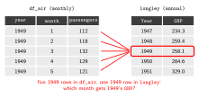
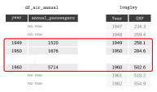
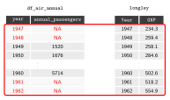

Before running any analysis, take a first look at the data: how large it is, which variables it contains, what values they take, and whether anything is missing. This helps to spot mistakes early, for example a merge that dropped observations or a variable stored in the wrong units.
We use df_air, the monthly passenger dataset created in Chapter 1, as an example.
2.1.1 Size and structure
dim() returns the number of rows and columns, names() the variable names, and str() the type of each variable together with its first values:
dim(df_air)
[1] 144 3
names(df_air)
[1] "year" "month" "passengers"
str(df_air)
'data.frame': 144 obs. of 3 variables:
$ year : num 1949 1949 1949 1949 1949 ...
$ month : num 1 2 3 4 5 6 7 8 9 10 ...
$ passengers: num 112 118 132 129 121 135 148 148 136 119 ...
head(), used in Chapter 1, prints the first six rows, and tail() prints the last six:
summary() returns the minimum, the quartiles, the mean and the maximum of a numerical variable:
summary(df_air$passengers)
Min. 1st Qu. Median Mean 3rd Qu. Max.
104.0 180.0 265.5 280.3 360.5 622.0
Applied to a whole dataframe, it summarises every variable at once:
summary(df_air)
year month passengers
Min. :1949 Min. : 1.00 Min. :104.0
1st Qu.:1952 1st Qu.: 3.75 1st Qu.:180.0
Median :1954 Median : 6.50 Median :265.5
Mean :1954 Mean : 6.50 Mean :280.3
3rd Qu.:1957 3rd Qu.: 9.25 3rd Qu.:360.5
Max. :1960 Max. :12.00 Max. :622.0
Individual statistics have their own functions, such as mean(), median(), var() (variance) and sd() (standard deviation):
mean(df_air$passengers)
[1] 280.2986
sd(df_air$passengers)
[1] 119.9663
2.1.3 Frequency tables
table() counts how many observations take each value of a variable. It is most useful for categorical variables. Here it confirms that every year has exactly 12 monthly observations:
Square brackets select parts of a dataframe by position, as dataframe[rows, columns]. Leaving the rows or the columns empty selects all of them. The $ sign selects a single variable by its name.
# Accessing data through row/column indexesdf_air[1:3,] # Rows 1 to 3, all columns.
A new variable is created by assigning a vector to a name that does not yet exist in the dataframe, with dataframe$new_variable <- .... The vector is usually computed from existing variables. passengers is measured in thousands, so dividing it by 1000 gives the number of passengers in millions:
ifelse() returns one value where a condition is TRUE and another where it is FALSE, which makes it useful for creating categorical variables. We create two categorical variables: season separates the summer months from the rest of the year, and traffic separates the months with more passengers than the median month from the others:
The dplyr way starts from the dataframe and passes it to mutate() with the pipe |>. Inside mutate(), variables are referred to by their name alone, and several new variables can be created at once. lag() returns the value of the previous row, so lag(passengers) is the number of passengers in the previous month and lag(passengers, 12) the number in the same month of the previous year:
year month passengers passengers_millions growth_monthly growth_yearly
1 1949 1 112 0.112 NA NA
2 1949 2 118 0.118 0.05357143 NA
3 1949 3 132 0.132 0.11864407 NA
4 1949 4 129 0.129 -0.02272727 NA
5 1949 5 121 0.121 -0.06201550 NA
6 1949 6 135 0.135 0.11570248 NA
7 1949 7 148 0.148 0.09629630 NA
8 1949 8 148 0.148 0.00000000 NA
9 1949 9 136 0.136 -0.08108108 NA
10 1949 10 119 0.119 -0.12500000 NA
11 1949 11 104 0.104 -0.12605042 NA
12 1949 12 118 0.118 0.13461538 NA
13 1950 1 115 0.115 -0.02542373 0.02678571
14 1950 2 126 0.126 0.09565217 0.06779661
2.4 Multiple Datasets
In this section we work with a second dataset, longley, and later combine it with df_air.
2.4.1 A second dataset: longley
longley is a dataset that comes built into R, with yearly macroeconomic data for the United States from 1947 to 1962. Each row is one year, and each column is one of the following seven variables:
Variable
Description
Units
GNP.deflator
GNP implicit price deflator, a measure of the price level
index, 1954 = 100
GNP
Gross National Product
billions of current US dollars
Unemployed
number of unemployed people
tens of thousands of people
Armed.Forces
number of people in the armed forces
tens of thousands of people
Population
non-institutionalized population aged 14 or older
millions of people
Year
the year of the observation
calendar year
Employed
number of employed people
millions of people
For example, in 1947 the value of Unemployed is 235.6, which means about 2.36 million unemployed people, and the value of Employed is 60.323, which means about 60.3 million employed people.
# longley: US macroeconomic data, one row per year (1947-1962)data(longley)class(longley)
[1] "data.frame"
longley data features 7 variables, 16 observations:
Suppose we now want to combine the information in df_air with the information in longley. There is a problem: df_air is a monthly dataset, while longley is annual. Before we can combine them, both datasets need to have the same frequency, so we first aggregate df_air from monthly to annual data.

head(df_air)
year month passengers passengers_millions season traffic growth_monthly
1 1949 1 112 0.112 Rest of year Low NA
2 1949 2 118 0.118 Rest of year Low 0.05357143
3 1949 3 132 0.132 Rest of year Low 0.11864407
4 1949 4 129 0.129 Rest of year Low -0.02272727
5 1949 5 121 0.121 Rest of year Low -0.06201550
6 1949 6 135 0.135 Summer Low 0.11570248
growth_yearly
1 NA
2 NA
3 NA
4 NA
5 NA
6 NA
# Aggregate the monthly data to one row per yeardf_air_annual <- df_air |>group_by(year) |>summarise(annual_passengers =sum(passengers),mean_monthly_passengers =mean(passengers),min_monthly_passengers =min(passengers),max_monthly_passengers =max(passengers))head(df_air_annual)
After aggregating the data to the “highest” common denominator, we want to combine the two datasets in a single dataset.
Merging (or joining) two datasets means putting their columns side by side, matching the rows that refer to the same observation. The variable used to match the rows is called the key. Here the key is the year, which is called year in df_air_annual and Year in longley, so we tell dplyr that they are the same variable with by = c("year" = "Year").
New problem: The two datasets do not cover the same years: df_air_annual covers 1949 to 1960 (12 years), while longley covers 1947 to 1962 (16 years).
dplyr has several join functions, which differ only in what they do with the rows that have no match in the other dataset. In x |> some_join(y), x is the left dataset and y is the right dataset:
Function
Rows it keeps
Rows in our example
inner_join()
only the rows with a match in both datasets
12 (1949 to 1960)
left_join()
all rows of the left dataset
12 (1949 to 1960)
right_join()
all rows of the right dataset
16 (1947 to 1962)
full_join()
all rows of both datasets
16 (1947 to 1962)
inner_join() keeps only the years that appear in both datasets:
# Merge the two annual datasets, keeping the years present in bothdf_inner <- df_air_annual |>inner_join(longley, by =c("year"="Year"))dim(df_inner)
left_join() keeps every row of the left dataset, df_air_annual, and adds the longley variables to it. Since every year in df_air_annual also appears in longley, the result has the same 12 rows as with inner_join():

df_left <- df_air_annual |>left_join(longley, by =c("year"="Year"))dim(df_left)
[1] 12 11
right_join() keeps every row of the right dataset, longley, so the result has 16 rows. The years 1947, 1948, 1961 and 1962 have no match in df_air_annual, so the passenger variables are missing (NA) in those rows:

df_right <- df_air_annual |>right_join(longley, by =c("year"="Year"))dim(df_right)
[1] 16 11
# Rows without passenger datadf_right[is.na(df_right$annual_passengers), c("year", "annual_passengers", "GNP")]
# A tibble: 4 × 3
year annual_passengers GNP
<dbl> <dbl> <dbl>
1 1947 NA 234.
2 1948 NA 259.
3 1961 NA 518.
4 1962 NA 555.
Which join to use depends on which observations you want to keep. A left join is the most common choice: it keeps your main dataset intact and adds information from a second one, without dropping or adding rows.
2.4.4 Missing values
is.na() returns TRUE for every missing value. Since R counts TRUE as 1 and FALSE as 0, sum() gives the number of missing values in a variable, and colSums() gives it for every variable of a dataframe: